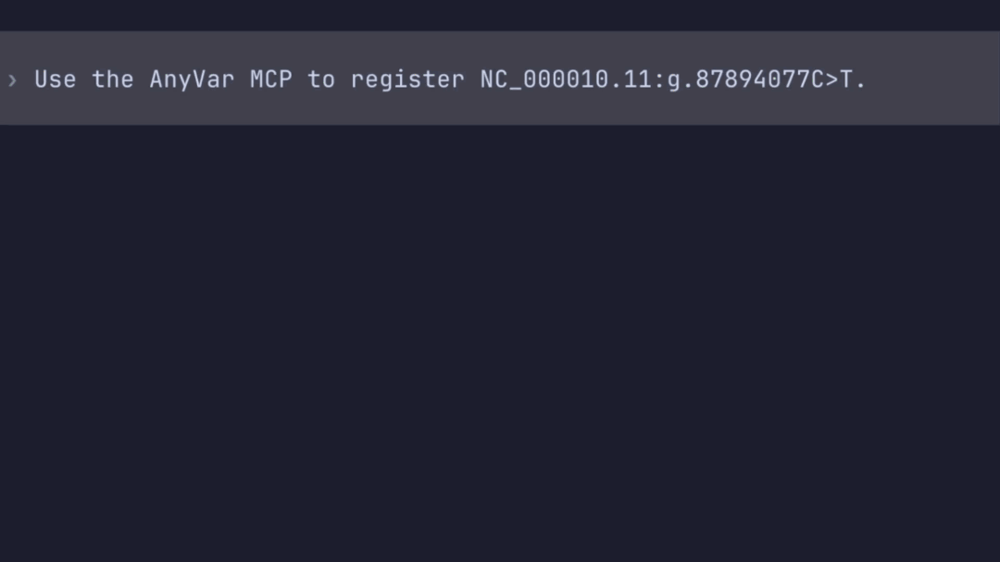

Quickstart¶
Only local MCP server connections over stdio are currently supported. Your AI agent starts the MCP server when it connects.
Watch the demo¶

Codex CLI using GPT-6-Luna at low reasoning effort
Prepare AnyVar¶
Start the AnyVar HTTP API and keep it running while you use the MCP tools. Note its base URL for the connection settings below.
Install the MCP server¶
Install from PyPI:
Connect your AI agent¶
Follow Connect your AI agent with ANYVAR_API_URL set to your
AnyVar service's base URL. Enable ANYVAR_ENABLE_REGISTRATION=true to run the
registration example below. See Configuration for all settings.
Verify the connection¶
With anyvar-mcp connected, check that your host shows its tools:
- Claude Desktop: Open a new chat. The server's tools should be available through Add files, connectors, and more → Connectors.
- Codex CLI: Run
codexand enter/mcp. You should seeanyvar-mcp: connected (4 tools).
Use the tools with your AI agent¶
Send the prompts below to your connected AI agent to explore the tools, register a variant, retrieve its mappings, and search a genomic region. Follow the examples in the same conversation so the agent can refer to earlier results. Each example describes what to expect; the agent's wording may vary.
See what tools are available¶
What tools are available for AnyVar?
The response should list the available tools with a brief description of each.
Check supported nomenclatures and identifiers¶
Which variant nomenclatures or identifier formats does each tool support?
The response should describe the accepted inputs for each tool, distinguishing variant expressions, VRS identifiers, and genomic region inputs.
Register a variant¶
Send this request in the chat or Codex prompt:
Register
NC_000010.11:g.87894077C>Tand tell me about the response.
Registration writes to AnyVar
Approve the tool call if your host asks. Registration requires
ANYVAR_ENABLE_REGISTRATION=true in the server configuration.
When registration succeeds, the response should include a VRS Allele object and its identifier, along with any messages or warnings.
Retrieve mappings¶
Ask the agent to explain variant mappings, then retrieve them for the registered variant:
Explain what variant mappings represent in AnyVar, then retrieve the registered variant and list its available outgoing mappings.
The response should briefly explain mappings and their direction, then show the registered VRS object and its outgoing mappings, or indicate that none are stored.
Inspect mapped objects¶
If a mapping is returned, ask to see both objects:
Show me the full VRS objects for that mapping.
The response should include the full source and destination VRS objects for the selected mapping.
Search a region¶
To try region search, send:
Search the registered variants on chromosome 10 from 87894070 through 87894080, inclusive. Show the IDs.
The response should list VRS IDs for registered variants found in the interval, or indicate that none were found in the registry.